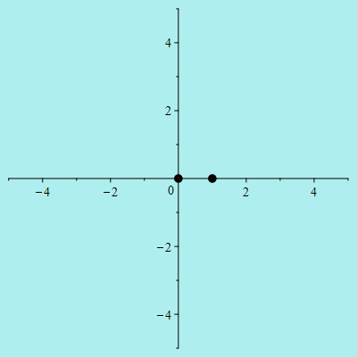

|
Here is an animated illustration of example 3.44 in ACCA, created using MAPLE®. It shows the image of the circle $|z|=r$ under the rational function \[ f(z) = \frac{z^2}{(z-1)(z+2i)} \] as $r$ increase from $0$ to $5$. By the argument principle, the winding number of the image curve around the origin is $2$ for $r \in (0,1)$, is $1$ for $r \in (1,2)$, and is $0$ for $r \in (2,+\infty)$. Notice how the curve blows up at the moments of discontinuity $r=1$ and $r=2$, and converges to the point $1$ as $r \to +\infty$.  Here is the evolution of the same curve, this time viewed on the Riemann sphere. The two points visible in the front are $0$ and $1$. The less visible point in the back is $\infty$ through which the curve passes at the moments $r=1$ and $r=2$.
|